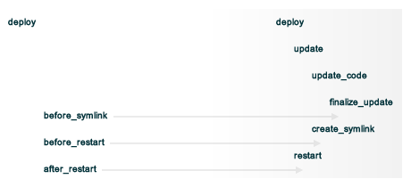
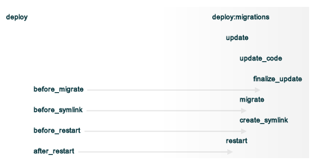

A resource is a key part of a recipe that defines the actions that can be taken against a piece of the system. These actions are identified during each Chef run as the resource collection is compiled. Once identified, each resource (in turn) is mapped to a provider, which then configures each piece of the system.
The deploy resource is used to manage and control deployments. It is one of the most popular resources available in Chef and is also the most complex, having the most attributes, multiple providers, the added complexity of callbacks, plus four attributes that support layout modifications from within a recipe.
The deploy resource is modeled after Capistrano, a utility and framework for executing commands in parallel on multiple remote machines via SSH. The deploy resource in Chef is designed to behave in a way that is similar to the deploy and deploy:migration tasks in Capistrano.
The syntax for using the deploy resource in a recipe is as follows:
deploy "name" do
some_attribute "value" # see attributes section below
...
callback do
# callback, including release_path or new_resource
end
...
purge_before_symlink
create_dirs_before_symlink
symlink
action :action # see actions section below
end
where
The following is an example of how the deploy_revision resource can work when used in a recipe. In this example, an application will be deployed to a folder named “/path/to/application”:
deploy_revision "/path/to/application" do
repo 'ssh://name-of-git-repo/repos/repo.git'
migrate false
purge_before_symlink %w{one two folder/three}
create_dirs_before_symlink []
symlinks(
"one" => "one",
"two" => "two",
"three" => "folder/three"
)
before_restart do
# some Ruby code
end
notifies :restart, "service[foo]"
notifies :restart, "service[bar]"
end
For the example shown above:
In the deploy directory, a sub-directory named shared must be created. This sub-directory is where configuration and temporary files will be kept. A typical Ruby on Rails application will have config, log, pids, and system directories within the shared directory to keep the files stored there independent of the code in the source repository.
In addition to the shared sub-directory, the deploy process will create sub-directories named releases and current (also in the deploy directory). The release directory holds (up to) five most recently deployed versions of an application. The current directory holds the currently-released version.
For example:
deploy_directory/
current/
releases/
shared/
config/
log/
pids/
system/
A deployment happens in four phases:
Chef uses a cache file to keep track of the order in which each revision of an application is deployed. If a re-deployment must be forced—by deleting the deployed code from a node, for example—the cache file must be deleted as well. The cache file is located in the default configuration at /var/chef/cache/revision-deploys/APPNAME/.
In-between each step in a deployment process, callbacks can be run using arbitrary Ruby code, including recipes. All callbacks support embedded recipes given in a block, but each callback assumes a shell command (instead of a deploy hook filename) when given a string.
The following callback types are available:
| Callback | Description |
|---|---|
| after_restart | A block of code or a path to a file that contains code that is run after restarting. Default value: deploy/after_restart.rb. |
| before_migrate | A block of code or a path to a file that contains Chef code that is run before a migration. Default value: deploy/before_migrate.rb. |
| before_restart | A block of code or a path to a file that contains Chef code that is run before restarting. Default value: deploy/before_restart.rb. |
| before_symlink | A block of code or a path to a file that contains Chef code that is run before symbolic linking. Default value: deploy/before_symlink.rb. |
Each of these callback types can be used in one of three ways:
Within a callback, there are two ways to get access to information about the deployment:
Both of these options must be available at the top-level within the callback, along with any assigned values that will be used later in the callback.
Callbacks and Capistrano
If you are familiar with Capistrano, the following examples should help you know when to use the various callbacks that are available in Chef. If you are not familiar with Capistrano, then follow the semantic names of these callbacks to help you determine when to use each of the callbacks within a recipe that is built with the deploy resource.
The following example shows where callbacks in Chef fit in relation to the steps taken by the deploy process in Capistrano:
and the following example shows the same comparison, but with the deploy:migrations process:
The deploy resource expects an application to be structured like a Ruby on Rails application, but the layout can be modified to meet custom requirements as needed. Use the following attributes within a recipe to modify the layout of a recipe that is using the deploy resource:
| Layout Modifiers | Description |
|---|---|
| create_dirs_before_symlink | Use this attribute to create directories before symbolic links are created. This attribute runs after purge_before_symlink and before symlink. Default value: %w{tmp public config} (or the same as ["tmp", "public", "config"]). |
| purge_before_symlink | Use this attribute to specify an array of directories (relative to the application root) that should be removed from a checkout before symbolic links are created. This attribute runs before create_dirs_before_symlink and before symlink. Default value: %w{log tmp/pids public/system} (or the same as ["log", "tmp/pids", "public/system"]. |
| symlink_before_migrate | Use this attribute to map files in a shared directory to the current release directory. The symbolic links for these files will be created before any migration is run. Use symlink_before_migrate({}) or symlink_before_migrate nil instead of symlink_before_migrate {} because {} will be interpreted as a block rather than an empty hash. Default value: {"config/database.yml" => "config/database.yml"}. |
| symlinks | Use this attribute to map files in a shared directory to their paths in the current release directory. This attribute runs after create_dirs_before_symlink and purge_before_symlink. Default value: {"system" => "public/system", "pids" => "tmp/pids", "log" => "log"}. |
This resource has the following actions:
| Action | Description |
|---|---|
| :deploy | Default. Use to deploy an application. |
| :force_deploy | Use to remove any existing release of the same code version and re-deploy a new one in its place. |
| :rollback | Use to roll an application back to the previous release. |
This resource has the following attributes:
| Attribute | Description |
|---|---|
| after_restart | A block of code or a path to a file that contains code that is run after restarting. Default value: deploy/after_restart.rb. |
| before_migrate | A block of code or a path to a file that contains Chef code that is run before a migration. Default value: deploy/before_migrate.rb. |
| before_restart | A block of code or a path to a file that contains Chef code that is run before restarting. Default value: deploy/before_restart.rb. |
| before_symlink | A block of code or a path to a file that contains Chef code that is run before symbolic linking. Default value: deploy/before_symlink.rb. |
| branch | The alias for the revision. |
| create_dirs_before_symlink | Use this attribute to create directories before symbolic links are created. This attribute runs after purge_before_symlink and before symlink. Default value: %w{tmp public config} (or the same as ["tmp", "public", "config"]). |
| deploy_to | The “meta root” for the application, if different from the path that is used to specify the name of a resource. |
| environment | A hash of environment variables: {"ENV_VARIABLE"=>"VALUE"}. (These environment variables must exist for a command to execute successfully.) |
| group | The system group that is responsible for the checked-out code. Default value: nil. |
| keep_releases | The number of releases for which a backup is kept. Default value: 5. |
| migrate | Indicates that the migration command will be run. Default value: false. |
| migration_command | A string that contains a shell command that can be executed to run a migration operation. |
| provider | Optional. Use to specify a provider by using its long name. For example: provider Chef::Provider::Long::Name. See the Providers section below for the list of providers available to this resource. |
| purge_before_symlink | Use this attribute to specify an array of directories (relative to the application root) that should be removed from a checkout before symbolic links are created. This attribute runs before create_dirs_before_symlink and before symlink. Default value: %w{log tmp/pids public/system} (or the same as ["log", "tmp/pids", "public/system"]. |
| repo | The alias for the repository. |
| repository | The URI for the repository. |
| repository_cache | The name of the sub-directory in which the pristine copy of an application’s source is kept. Default value: cached-copy. |
| restart_command | A string that contains a shell command that can be executed to run a restart operation. Default value: nil. |
| revision | The revision to be checked out. This can be symbolic, like HEAD or it can be a source control management-specific revision identifier. Default value: HEAD. |
| rollback_on_error | Indicates whether a deploy resource will rollback to a previously-deployed release if an error occurs when deploying a new release. Default value: false. |
| scm_provider | The name of the source control management provider to be used. Default value: Chef::Provider::Git. Optional values: Chef::Provider::Subversion. |
| symlinks | Use this attribute to map files in a shared directory to their paths in the current release directory. This attribute runs after create_dirs_before_symlink and purge_before_symlink. Default value: {"system" => "public/system", "pids" => "tmp/pids", "log" => "log"}. |
| symlink_before_migrate | Use this attribute to map files in a shared directory to the current release directory. The symbolic links for these files will be created before any migration is run. Use symlink_before_migrate({}) or symlink_before_migrate nil instead of symlink_before_migrate {} because {} will be interpreted as a block rather than an empty hash. Default value: {"config/database.yml" => "config/database.yml"}. |
| user | The system user that is responsible for the checked-out code. Default value: nil. |
The following attributes are for use with git only:
| Attribute | Description |
|---|---|
| enable_submodules | Use to perform a sub-module initialization and update. Default value: false. |
| git_ssh_wrapper | The alias for the ssh_wrapper. |
| remote | The remote repository to be used when synchronizing an existing clone. Default value: origin. |
| shallow_clone | Indicates that the clone depth is set to 5. Default value: true. |
| ssh_wrapper | The path to the wrapper script used when running SSH with git. The GIT_SSH environment variable is set to this. |
The following attributes are for use with Subversion only:
| Attribute | Description |
|---|---|
| svn_arguments | The extra arguments that are passed to the Subversion command. |
| svn_password | The password for the user that has access to the Subversion repository. |
| svn_username | The user name for a user that has access to the Subversion repository. |
For example:
deploy "/my/deploy/dir" do
repo "git@github.com/whoami/project"
revision "abc123" # or "HEAD" or "TAG_for_1.0" or (subversion) "1234"
user "deploy_ninja"
enable_submodules true
migrate true
migration_command "rake db:migrate"
environment "RAILS_ENV" => "production", "OTHER_ENV" => "foo"
shallow_clone true
keep_releases 10
action :deploy # or :rollback
restart_command "touch tmp/restart.txt"
git_ssh_wrapper "wrap-ssh4git.sh"
scm_provider Chef::Provider::Git # is the default, for svn: Chef::Provider::Subversion
end
The deploy resource providers are used to determine whether to deploy based on whether the release directory in which the deployment is to be made actually exists. The following providers are available. Use the short name to call the provider from a recipe:
| Long name | Short name | Notes |
|---|---|---|
| Chef::Provider::Deploy | deploy | When this short name is used, Chef will determine the correct provider during the Chef run. |
| Chef::Provider::Deploy::Revision | deploy_branch | See below for more information. |
| Chef::Provider::Deploy::Revision | deploy_revision | See below for more information. |
| Chef::Provider::Deploy::TimestampedDeploy | timestamped_deploy | The default provider for all platforms. See below for more information. |
The deploy_branch resource is used in the same way as the deploy_resource resource. It uses the Deploy::Revision provider and has uses the same set of actions and attributes.
The deploy_revision provider is the recommended provider, even if it is not listed as the default. The deploy_revision provider is used to ensure that the name of a release sub-directory is based on a revision identifier. For users of git, this will be the familiar SHA checksum. For users of Subversion, it will be the integer revision number. If a name other than a revision identifier is provided—branch names, tags, and so on—Chef will ignore the alternate names and will look up the revision identifier and use it to name the release sub-directory. When the deploy_revision provider is given an exact revision to deploy, it will behave in an idempotent manner.
The deploy_revision provider results in deployed components under the destination location that is owned by the user who runs the application. This is sometimes an issue for certain workflows. If issues arise, consider the following:
When using the deploy_revision provider, and when the deploy fails for any reason, and when the same code is used to re-deploy, the action should be set manually to :force_deploy. Forcing the re-deploy will remove the old release directory, after which the deploy can proceed as usual. (Forcing a re-deploy over the current release can cause some downtime.) Deployed revisions are stored in (file_cache_path)/revision-deploys/(deploy_path).
The timestamped_deploy provider is the default deploy provider. It is used to name release directories with a timestamp in the form of YYYYMMDDHHMMSS. For example: /my/deploy/dir/releases/20121120162342. The deploy resource will determine whether or not to deploy code based on the existence of the release directory in which it is attempting to deploy. Because the timestamp is different for every Chef run, the timestamped_deploy provider is not idempotent. When the timestamped_deploy provider is used, it requires that the action setting on a resource be managed manually in order to prevent unintended continuous deployment.
The following examples demonstrate various approaches for using resources in recipes. If you want to see examples of how Opscode uses resources in recipes, take a closer look at the cookbooks that Opscode authors and maintains: https://github.com/opscode-cookbooks.
Modify the layout of a Ruby on Rails application
The layout of the application matches a Rails app by default, but you can customize it to fit your needs. To customize the application layout:
deploy "/my/apps/dir/deploy" do
# Use a local repo if you prefer
repo "/path/to/gitrepo/typo/"
environment "RAILS_ENV" => "production"
revision "HEAD"
action :deploy
migration_command "rake db:migrate --trace"
migrate true
restart_command "touch tmp/restart.txt"
create_dirs_before_symlink %w{tmp public config deploy}
# You can use this to customize if your app has extra configuration files
# such as amqp.yml or app_config.yml
symlink_before_migrate "config/database.yml" => "config/database.yml"
# If your app has extra files in the shared folder, specify them here
symlinks "system" => "public/system",
"pids" => "tmp/pids",
"log" => "log",
"deploy/before_migrate.rb" => "deploy/before_migrate.rb",
"deploy/before_symlink.rb" => "deploy/before_symlink.rb",
"deploy/before_restart.rb" => "deploy/before_restart.rb",
"deploy/after_restart.rb" => "deploy/after_restart.rb"
end
Use resources within callbacks
Using resources from within your callbacks as blocks or within callback files distributed with your application’s source code. To use embedded recipes for callbacks:
deploy "#{node['tmpdir']}/deploy" do
repo "#{node['tmpdir']}/gitrepo/typo/"
environment "RAILS_ENV" => "production"
revision "HEAD"
action :deploy
migration_command "rake db:migrate --trace"
migrate true
# Callback awesomeness:
before_migrate do
current_release = release_path
directory "#{current_release}/deploy" do
mode 00755
end
# creates a callback for before_symlink
template "#{current_release}/deploy/before_symlink_callback.rb" do
source "embedded_recipe_before_symlink.rb.erb"
mode 00644
end
end
# This file can contain Chef recipe code, plain ruby also works
before_symlink "deploy/before_symlink_callback.rb"
restart do
current_release = release_path
file "#{release_path}/tmp/restart.txt" do
mode 00644
end
end
end
Deploy from a private git repository without using the application cookbook
To deploy from a private git repository without using the application cookbook, first ensure that:
and then use code like the following to remove a passphrase from a private key:
ssh-keygen -p -P 'YOURPASSPHRASE' -N '' -f id_deploy
Use an SSH wrapper
To write a recipe that uses an SSH wrapper:
Create a file in the cookbooks/COOKBOOK_NAME/files/default directory that is named wrap-ssh4git.sh and which contains the following:
#!/usr/bin/env bash
/usr/bin/env ssh -o "StrictHostKeyChecking=no" -i "/tmp/private_code/.ssh/id_deploy" $1 $2
Set up the cookbook file.
Add a recipe to the cookbook file similar to the following:
directory "/tmp/private_code/.ssh" do
owner "ubuntu"
recursive true
end
cookbook_file "/tmp/private_code/wrap-ssh4git.sh" do
source "wrap-ssh4git.sh"
owner "ubuntu"
mode 00700
end
deploy "private_repo" do
repo "git@github.com:acctname/private-repo.git"
user "ubuntu"
deploy_to "/tmp/private_code"
action :deploy
ssh_wrapper "/tmp/private_code/wrap-ssh4git.sh"
end
This will deploy the git repository at git@github.com:acctname/private-repo.git in the /tmp/private_code directory.
Use a callback to include a file that will be passed as a code block
The code in a file that is included in a recipe using a callback is evaluated exactly as if the code had been put in the recipe as a block. Files are searched relative to the current release.
To specify a file that contains code to be used as a block:
deploy "/deploy/dir/" do
# ...
before_migrate "callbacks/do_this_before_migrate.rb"
end
Use a callback to pass a code block
To pass a block of Python code before a migration is run:
deploy_revision "/deploy/dir/" do
# other attributes
# ...
before_migrate do
# release_path is the path to the timestamp dir
# for the current release
current_release = release_path
# Create a local variable for the node so we'll have access to
# the attributes
deploy_node = node
# A local variable with the deploy resource.
deploy_resource = new_resource
python do
cwd current_release
user "myappuser"
code<<-PYCODE
# Woah, callbacks in python!
# ...
# current_release, deploy_node, and deploy_resource are all available
# within the deploy hook now.
PYCODE
end
end
end
Use the same API for all recipes using the same gem
Any recipes using the git-deploy gem can continue using the same API. To include this behavior in a recipe, do something like the following:
deploy "/srv/#{appname}" do
repo "git://github.com/radiant/radiant.git"
revision "HEAD"
user "railsdev"
enable_submodules false
migrate true
migration_command "rake db:migrate"
# Giving a string for environment sets RAILS_ENV, MERB_ENV, RACK_ENV
environment "production"
shallow_clone true
action :deploy
restart_command "touch tmp/restart.txt"
end
Deploy without creating symbolic links to a shared folder
To deploy without creating symbolic links to a shared folder:
deploy "/my/apps/dir/deploy" do
symlinks {}
end
When deploying code that is not Ruby on Rails and symbolic links to a shared folder are not wanted, use parentheses () or Hash.new to avoid ambiguity. For example, using parentheses:
deploy "/my/apps/dir/deploy" do
symlinks({})
end
or using Hash.new:
deploy "/my/apps/dir/deploy" do
symlinks Hash.new
end
Clear a layout modifier attribute
Using the default attribute values that Chef provides is the recommended baseline when working with recipes. Then, depending on what each node requires, these default values can be overridden with node-, role-, environment-, and cookbook-specific values. The deploy resource has four layout modifiers: create_dirs_before_symlink, purge_before_symlink, symlink_before_migrate, and symlinks. These are Ruby hashes that behave as attributes of the deploy resource. When these layout modifiers are used in a recipe, they appear similar to the following:
deploy "name" do
...
symlink_before_migrate {"config/database.yml" => "config/database.yml"}
create_dirs_before_symlink %w{tmp public config}
purge_before_symlink %w{log tmp/pids public/system}
symlinks { "system" => "public/system",
"pids" => "tmp/pids",
"log" => "log"
}
...
end
and then what these layout modifiers look like if they were empty:
deploy "name" do
...
symlink_before_migrate nil
create_dirs_before_symlink []
purge_before_symlink []
symlinks nil
...
end
In most cases, using the empty values for the layout modifiers will prevent Chef from passing symbolic linking information to a node during the Chef run. However, in some cases, it may be preferable to ensure that one (or more) of these layout modifiers do not pass any symbolic linking information to a node during the Chef run at all. Because each of these layout modifiers are a hash, the clear instance method can be used to clear out these values.
To clear the default values for a layout modifier:
deploy "name" do
...
symlink_before_migrate.clear
create_dirs_before_symlink.clear
purge_before_symlink.clear
symlinks.clear
...
end
In general, use this approach carefully and only after it is determined that nil or empty values won’t provide the expected result.